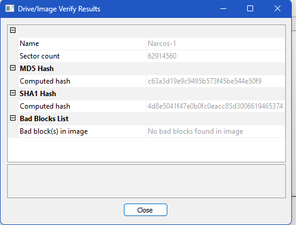
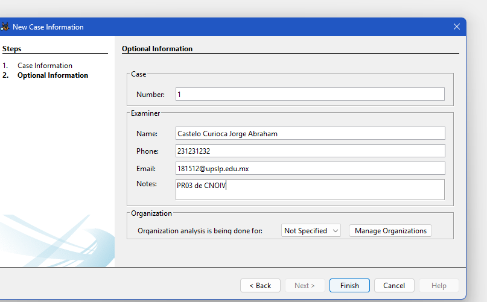
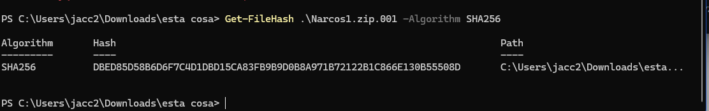
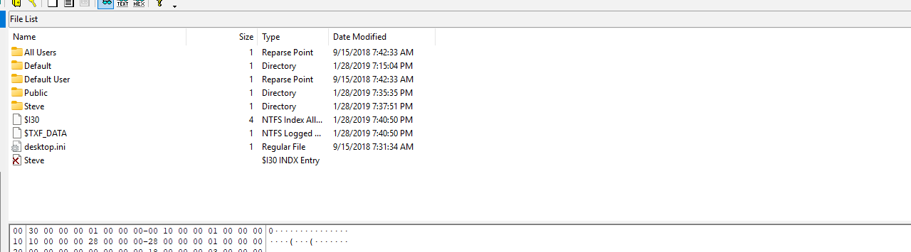
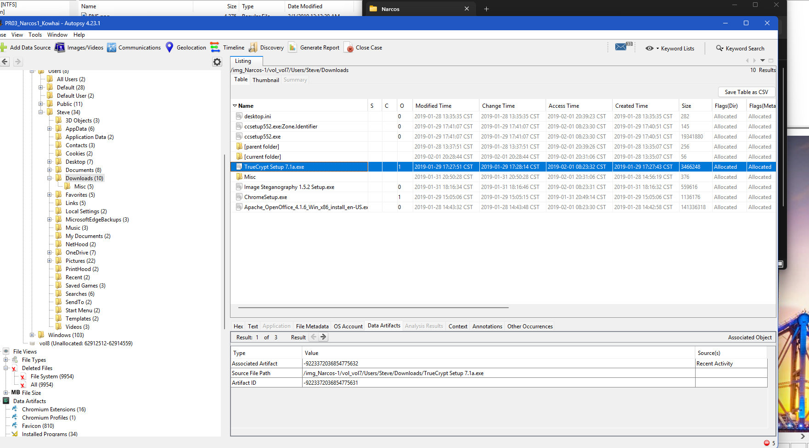
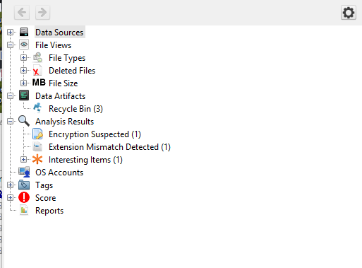

1. Ficha Técnica del Caso y Verificación de Integridad
Nombre del Caso en Autopsy
PR03_Narcos1_Kowhai (Case Number: 1)
Organización / Fecha
UPSLP — CNO IV • 18 de noviembre de 2026
Perito Examinador
Jorge Abraham Castelo Curioca (Matrícula: 181512)
Evidencia Analizada
Imagen Narcos-1.001 – .021 (30,720 MB / 62,914,560 sectores)
Objetivo de la Investigación
Examinar la evidencia digital del equipo de escritorio vinculado a Steve Kowhai (SK-DESKTOP), reconstruir desplazamientos y logística aérea/terrestre, identificar artefactos de navegación y comunicación (Chrome, Edge, Discord), y evaluar indicios de herramientas de cifrado y esteganografía (TrueCrypt e Image Steganography).
| Elemento Verificado | Valor Criptográfico / Parámetro | Herramienta / Estado |
|---|---|---|
| Narcos1.zip.001 | SHA256: DBED85D58B6D6F7C4D1DBD15CA83FB9B9D0B8A971B72122B1C866E130B55508D | PowerShell Get-FileHash (Íntegro) |
| Narcos-1 (.001–.021) | MD5: c63a3d19e9c9495b573f45be544e50f9 SHA1: 4d8e5041f47e0b0fc0eacc85d300661946537418 |
FTK Imager 4.2.0.13 (0 bad blocks) |



2. Contexto Operativo e Incidente Investigado
Una operación internacional de inteligencia alertó a las autoridades de Nueva Zelanda sobre el posible ingreso de sustancias ilícitas a su territorio, culminando con la interceptación de dos pasajeros procedentes de Australia —John Fredricksen y Jane Esteban— en el Aeropuerto Internacional de Wellington (WLG) con un kilogramo de metanfetamina oculto en una maleta.
Tras su aseguramiento, las autoridades identificaron dos posibles puntos de entrega: la biblioteca de Eastbourne (Eastbourne Library) y un inmueble ubicado en Petone. El allanamiento en este último domicilio permitió incautar sustancias ilícitas, armas de fuego y la computadora de escritorio vinculada a Steve Kowhai, cuya imagen forense (Narcos-1) es objeto del presente dictamen.
3. Parte I. Extracción e Identificación de Evidencia Digital
Registro de valores exactos, rutas dentro de la imagen forense, procedimientos en FTK Imager / Autopsy y salidas comprobables.
A. Sistema Operativo y Navegación
¿Qué edición y versión de Windows se encuentran instaladas en el equipo? Indica el artefacto donde se obtiene la información.
Registro SOFTWARE- Valor exacto: Edición
Windows 10 Pro(arquitecturaAMD64, equipoSK-DESKTOP, Product ID00330-80000-00000-AA502, propietario registradoSteve). Versión / Compilación:Windows 10 Versión 1809 (OS Build 17763)(actualización de octubre de 2018). - Artefacto y ruta: Subclave
HKLM\SOFTWARE\Microsoft\Windows NT\CurrentVersionen la colmenaNarcos-1\Basic data partition (4) [30104MB]\NONAME [NTFS]\[root]\Windows\System32\config\SOFTWARE(Autopsy:/img_Narcos-1/vol_vol7/Windows/System32/config/SOFTWARE). - Herramienta: Autopsy 4.23.1 (
Recent Activity → Data Artifacts → Operating System Information).

¿Cuál es el nombre de la carpeta del perfil principal y cuál es su ruta absoluta?
Sistema de Archivos NTFS- Valor exacto: Carpeta del perfil principal:
Steve| Ruta absoluta en Windows:C:\Users\Steve. - Ruta en imagen: FTK Imager:
Narcos-1\Basic data partition (4) [30104MB]\NONAME [NTFS]\[root]\Users\Steve| Autopsy:/img_Narcos-1/vol_vol7/Users/Steve. - Procedimiento: Inspección del directorio
[root]\Usersen AccessData FTK Imager.

¿Cuál es la ruta de la clave UserAssist que registra actividad de programas en el perfil principal?
NTUSER.DAT- Valor exacto:
Software\Microsoft\Windows\CurrentVersion\Explorer\UserAssist(en el registro activo:HKEY_CURRENT_USER\Software\Microsoft\Windows\CurrentVersion\Explorer\UserAssist, con subclaves GUID como{CEBFF5CD-ACE2-4F4F-9178-9926F41749EA}y{F4E57C4B-2036-45F0-A9AB-443BCFE33D9F}). - Ruta del artefacto:
/img_Narcos-1/vol_vol7/Users/Steve/NTUSER.DAT. - Procedimiento: Visor de Registro integrado de Autopsy 4.23.1 sobre
NTUSER.DATdel perfilSteve.

¿Qué dos navegadores presentan artefactos de actividad? Identifica el archivo o base de datos del historial de cada uno.
Navegadores Web- 1. Google Chrome: Base de datos SQLite
History(360,448 bytes; versión de esquema 41) en/img_Narcos-1/vol_vol7/Users/Steve/AppData/Local/Google/Chrome/User Data/Default/History(C:\Users\Steve\AppData\Local\Google\Chrome\User Data\Default\History). - 2. Microsoft Edge (EdgeHTML): Base de datos ESE
WebCacheV01.daten/img_Narcos-1/vol_vol7/Users/Steve/AppData/Local/Microsoft/Windows/WebCache/WebCacheV01.dat, complementada por los respaldos enC:\Users\Steve\MicrosoftEdgeBackups.

¿Cuál es el hash MD5 del archivo History del perfil predeterminado de Chrome?
Hash MD5
Calculado y exportado con AccessData FTK Imager (Export File Hash List) sobre Narcos-1\Basic data partition (4) [30104MB]\NONAME [NTFS]\[root]\Users\Steve\AppData\Local\Google\Chrome\User Data\Default\History.

B. Documentos, Imágenes y Metadatos
¿Cuál es la ruta absoluta del archivo airport crystals.jpg?
Ubicación de Archivo- Ruta absoluta en Windows:
C:\Users\Steve\Documents\Misc\airport crystals.jpg. - Ruta en imagen: FTK Imager:
Narcos-1\Basic data partition (4) [30104MB]\NONAME [NTFS]\[root]\Users\Steve\Documents\Misc\airport crystals.jpg| Autopsy:/img_Narcos-1/vol_vol7/Users/Steve/Documents/Misc/airport crystals.jpg.

¿Cuál es la fecha y hora de creación de airport crystals.jpg (NZDT)?
Metadatos NTFS • NZDT
Conversión horaria verificada: Autopsy reporta 2019-01-30 15:25:18 CST (UTC-6), equivalente a 2019-01-30 21:25:18 UTC en FTK Imager; al sumar +13 horas correspondientes al Horario de Verano de Nueva Zelanda (NZDT), se obtiene el 31 de enero de 2019 a las 10:25:18 NZDT.

¿Cuál es el hash MD5 completo de dropoff.jpg?
Hash MD5
Extraído mediante FTK Imager (dropoff hash.csv) sobre Users\Steve\Documents\Misc\dropoff.jpg. Su flujo alternativo dropoff.jpg:Zone.Identifier registra MD5 0a1a195222044f4cd9aba9eac9d2f969.

¿Cuál es la fecha y hora de última modificación de dropoff.jpg (NZDT)?
Metadatos NTFS • NZDT
Conversión horaria verificada: Autopsy registra Modified: 2019-02-01 19:06:06 CST (UTC-6), equivalente a 2019-02-02 01:06:06 UTC en FTK Imager; al convertir a NZDT (UTC+13), corresponde al 2 de febrero de 2019 a las 14:06:06 NZDT.

¿Cuál es el nombre exacto y la ruta del archivo de imagen relacionado con reservaciones de vuelo en Documents\Misc?
Evidencia Gráfica- Nombre exacto:
flightbookings.PNG(52 KB; última modificación:2019-02-02 02:28:45 UTC/2019-02-02 15:28:45 NZDT). - Ruta absoluta:
C:\Users\Steve\Documents\Misc\flightbookings.PNG(Narcos-1\Basic data partition (4) [30104MB]\NONAME [NTFS]\[root]\Users\Steve\Documents\Misc\flightbookings.PNG).
¿Cuál es el hash MD5 del archivo Method run.jpg?
Hash CSV Verificado
Obtenido del reporte CSV exportado desde FTK Imager (Method Run Hash.csv) sobre Narcos-1\Basic data partition (4) [30104MB]\NONAME [NTFS]\[root]\Users\Steve\Documents\Misc\Method run.jpg (145,213 bytes). El flujo Method run.jpg:Zone.Identifier registra MD5 0a1a195222044f4cd9aba9eac9d2f969.
C. Programas y Otros Artefactos
¿Cuál es el hash MD5 completo de BNE.png?
Hash CSV Verificado
Obtenido del archivo BNE hash.csv exportado desde FTK Imager sobre Narcos-1\Basic data partition (4) [30104MB]\NONAME [NTFS]\[root]\Users\Steve\Downloads\Misc\BNE.png. Su flujo Zone.Identifier tiene MD5 dce5191790621b5e424478ca69c47f55.
¿Cuál es el nombre, ruta y MD5 del instalador de una herramienta de esteganografía en Downloads?
Esteganografía- Nombre exacto:
Image Steganography 1.5.2 Setup.exe(559,616 bytes; creado el2019-01-31 18:16:32 CST/2019-02-01 13:16:32 NZDT; Artifact ID:-9223372036854775616). - Ruta absoluta:
C:\Users\Steve\Downloads\Image Steganography 1.5.2 Setup.exe(Autopsy:/img_Narcos-1/vol_vol7/Users/Steve/Downloads/Image Steganography 1.5.2 Setup.exe). - Nota sobre MD5: En la vista de listado tabular de Autopsy capturada no se desplegó la columna de hash MD5 ni se generó CSV de exportación para este binario.

¿Cuál es el nombre y la ruta del instalador de una herramienta de cifrado encontrado en Downloads?
Cifrado de Volúmenes- Nombre exacto:
TrueCrypt Setup 7.1a.exe(3,466,248 bytes; creado el2019-01-29 17:27:43 CST/2019-01-30 12:27:43 NZDT). - Ruta absoluta:
C:\Users\Steve\Downloads\TrueCrypt Setup 7.1a.exe(Autopsy:/img_Narcos-1/vol_vol7/Users/Steve/Downloads/TrueCrypt Setup 7.1a.exe).

¿Cuáles son las rutas de la caché de Discord y de ActivitiesCache.db utilizada por Windows Timeline?
Artefactos de Actividad- 1. Caché de Discord:
C:\Users\Steve\AppData\Roaming\Discord\Cache(complementada porGPUCache; ruta en imagen:/img_Narcos-1/vol_vol7/Users/Steve/AppData/Roaming/Discord/Cache, con 130 elementos activosf_000001af_000047). - 2. Windows Timeline (ActivitiesCache.db):
C:\Users\Steve\AppData\Local\ConnectedDevicesPlatform\L.Steve\ActivitiesCache.db(ruta en imagen:/img_Narcos-1/vol_vol7/Users/Steve/AppData/Local/ConnectedDevicesPlatform/L.Steve/ActivitiesCache.db).

4. Parte II. Investigación, Interpretación y Análisis del Caso
Cada análisis distingue expresamente lo observado (con marcas horarias UTC y NZDT / UTC+13), la interpretación propuesta y los límites probatorios del disco.
Examina flightbookings, BNE.png y dropoff.jpg. ¿Qué coincidencias sobre lugares, desplazamientos o logística identificas?
▸ Lo observado (Evidencia empírica y marcas temporales)
flightbookings.PNG(modificada el 2019-02-02 02:28:45 UTC / 2019-02-02 15:28:45 NZDT): cotización para 2 pasajeros adultos (AU$663.91 c/u; total AU$1,327.82) volando de Brisbane, Australia (BNE) a Wellington, Nueva Zelanda (WLG) el 16 de febrero de 2019 en Virgin Australia y regresando el 23 de febrero de 2019 en Qantas Airways.BNE.png(Downloads\Misc\BNE.png, MD5dffa98bdd7371d1806adb09db27ba283, conZone.Identifier): archivo gráfico cuyo nombre corresponde al código IATA de Brisbane (BNE), coincidiendo con el aeropuerto de origen/destino de los vuelos.dropoff.jpg(modificada el 2019-02-02 01:06:06 UTC / 2019-02-02 14:06:06 NZDT, MD57feb763bebe42c3a3464c9ee3bb1d3e8): captura de Google Maps con marcador rojo directamente sobre Eastbourne Library (Biblioteca de Eastbourne).

▸ Interpretación propuesta
Con solo 1 hora y 22 minutos de diferencia el 2 de febrero de 2019 (14:06:06 NZDT y 15:28:45 NZDT), el usuario documentó el ingreso aéreo de dos adultos desde Brisbane (BNE) a Wellington (WLG) —coincidente con la detención aduanal de John Fredricksen y Jane Esteban— y el punto de entrega terrestre en Eastbourne Library (denominado operativamente dropoff).
▸ Lo que no puede confirmarse con la evidencia disponible
flightbookings.PNG muestra una pantalla de cotización previa al pago («Book now so you don't miss out on this price!»), por lo que por sí sola no prueba la compra definitiva de los boletos ni contiene los nombres de los pasajeros, ni acredita que la entrega física llegara a consumarse.
Contrasta airport crystals.jpg y Method run.jpg con un registro de actividad del equipo. ¿Qué interpretación sobre su finalidad puede sostenerse?
▸ Lo observado (Evidencia empírica y correlación de actividad)
Method run.jpg(creada el 2019-01-30 21:21:24 UTC / 2019-01-31 10:21:24 NZDT): mapa del valle de Hutt (Upper Hutt / Petone / Wainuiomata) hacia Eastbourne, con la anotación manuscrita en rojo «Home».airport crystals.jpg(creada 2 min 54 s después, el 2019-01-30 21:25:18 UTC / 2019-01-31 10:25:18 NZDT): ruta en Google Maps desde el Aeropuerto de Wellington rodeando la bahía por Petone hasta Eastbourne (47 min / 31.6 kmen auto;1 h 38 minen transporte público).- Registro de actividad del equipo: Ambos archivos comparten exactamente la misma marca de último acceso NTFS (
Accessed: 2019-01-30 21:04:13 CST / 2019-01-31 16:04:13 NZDT) y fueron generados dentro de la misma sesión activa registrada enChrome HistoryyNTUSER.DATdel perfilSteve.


▸ Interpretación propuesta
La creación consecutiva en menos de tres minutos, su consulta conjunta posterior y la semántica de sus nombres (airport crystals en alusión al traslado de metanfetamina cristalina desde el aeropuerto y Method run como ruta de distribución hacia la base marcada como «Home» en Eastbourne) sustentan que su finalidad fue planificar tiempos y rutas terrestres entre el aeropuerto, Petone y Eastbourne.
▸ Lo que no puede confirmarse con la evidencia disponible
Consultar mapas en el navegador no demuestra que el trayecto físico se haya realizado ni prueba de forma aislada que la palabra «crystals» designe inequívocamente la sustancia incautada en aduanas.
¿Qué evidencia permite afirmar que Discord estuvo presente o fue utilizado en el equipo? ¿Qué no puede concluirse sobre conversaciones, interlocutores o autoría sin recuperar mensajes verificables?
▸ Lo observado e interpretación de uso
En C:\Users\Steve\AppData\Roaming\Discord (creada el 2019-01-28 20:57:06 UTC / 2019-01-29 09:57:06 NZDT) se localizan el cliente versión 0.0.304, archivos de sesión autenticada (Cookies, Origin Bound Certs, Network Persistent State, Preferences), Local Storage, iconos badge-1.ico a badge-11.ico y la carpeta Cache con 130 entradas activas actualizadas hasta el 2019-02-02 02:38:59 UTC / 2019-02-02 15:38:59 NZDT (10 minutos después de flightbookings.PNG). Esto acredita que Discord estuvo instalado, con sesión iniciada y tráfico activo.
▸ Lo que no puede concluirse sin recuperar mensajes verificables
La presencia de caché y cookies de red no permite conocer el contenido textual de las conversaciones, identificar interlocutores, servidores o canales, ni probar la autoría física directa (qué persona escribió cada mensaje frente al teclado), requiriéndose decodificar el almacenamiento local o solicitar los registros al proveedor.
Analiza los indicios de herramientas de esteganografía y cifrado. Diferencia descarga, instalación, ejecución y uso efectivo; explica qué artefactos respaldan cada nivel.
▸ Lo observado (Instaladores y alertas de análisis)
TrueCrypt Setup 7.1a.exe(3,466,248 bytes): creado el 2019-01-29 23:27:43 UTC / 2019-01-30 12:27:43 NZDT.Image Steganography 1.5.2 Setup.exe(559,616 bytes): creado el 2019-02-01 00:16:32 UTC / 2019-02-01 13:16:32 NZDT.- Alertas en Autopsy (Analysis Results):
Encryption Suspected (1)yExtension Mismatch Detected (1).

1. Nivel de Descarga (Comprobado)
Respaldado por la presencia de ambos Setup.exe en C:\Users\Steve\Downloads, marcas NTFS de creación, flujos Zone.Identifier y registros en Chrome History / DownloadMetadata.
2. Nivel de Instalación (Comprobado)
Sustentado en las claves de software instalado del Registro (HKLM\SOFTWARE\Microsoft\Windows\CurrentVersion\Uninstall / Installed Programs) y carpetas de programa generadas.
3. Nivel de Ejecución (Comprobado por trazas)
Acreditado mediante contadores en UserAssist (NTUSER.DAT), archivos C:\Windows\Prefetch\*.pf y eventos en ActivitiesCache.db. (El Accessed Time simultáneo del 2019-02-02 03:23:31 NZDT responde a escaneo de carpeta y no equivale a ejecución).
4. Uso Efectivo (Indicios parciales)
Para cifrado, la alerta Encryption Suspected (1) indica un volumen de alta entropía compatible con TrueCrypt. Para esteganografía, se requiere estegoanálisis sobre las imágenes de Misc.
▸ Lo que no puede confirmarse con la evidencia disponible
Sin descifrar el volumen detectado bajo Encryption Suspected (1) ni extraer carga útil oculta de las imágenes, no es posible demostrar qué archivos específicos fueron protegidos ni confirmar que Image Steganography 1.5.2 haya generado una imagen portadora operativa.
Formula una hipótesis sobre la relación del equipo con los hechos investigados y una explicación alternativa. Sustenta el análisis con cuatro hallazgos y señala dos evidencias adicionales necesarias.
▸ Hipótesis Principal (Participación logística directa)
El equipo SK-DESKTOP (perfil Steve, incautado en el inmueble de Petone vinculado a Steve Kowhai) operó como centro de planificación logística para coordinar el ingreso de metanfetamina desde Brisbane (BNE) hacia Wellington (WLG) mediante dos correos humanos, trazando el traslado terrestre vía Petone hacia Eastbourne (Home) y fijando Eastbourne Library (dropoff.jpg) como punto de entrega, utilizando Discord para comunicaciones y TrueCrypt / Image Steganography para ocultar información operativa.
▸ Explicación Alternativa (Hipótesis de descarte / uso no delictivo)
Los artefactos podrían corresponder a la planificación de viajes personales o turísticos de un tercero con acceso al equipo doméstico (cotización vacacional a Brisbane, rutas cotidianas en la bahía de Wellington y herramientas genéricas de privacidad), sin que exista prueba directa en el disco de que el usuario Steve haya financiado o ejecutado materialmente el tráfico de metanfetamina.
▸ Cuatro (4) hallazgos empíricos que sustentan el análisis
- Logística aérea BNE–WLG para dos adultos:
flightbookings.PNG(2019-02-02 15:28:45 NZDT) y descarga deBNE.pngenDownloads\Misc. - Identificación del punto de entrega:
dropoff.jpg(2019-02-02 14:06:06 NZDT) marcando exactamente Eastbourne Library. - Trazado de rutas y nomenclatura operativa: Creación consecutiva y consulta conjunta de
Method run.jpg(anotación«Home»en Eastbourne) yairport crystals.jpg(ruta Aeropuerto–Petone–Eastbourne) el2019-01-31. - Comunicaciones activas y ocultamiento: Caché activa de Discord hasta el
2019-02-02 15:38:59 NZDT, instaladores de TrueCrypt 7.1a e Image Steganography 1.5.2, y detección deEncryption Suspected (1).
▸ Dos (2) evidencias adicionales necesarias
- Análisis interno de bases de datos y descifrado de contenedor: Inspeccionar las tablas SQLite de
Chrome HistoryyActivitiesCache.db, intentar el descifrado del volumen detectado enEncryption Suspected (1)(con claves halladas en el inmueble de Petone) y aplicar estegoanálisis a las imágenes del disco. - Evidencia externa de comunicaciones y registros aeroportuarios/bancarios: Requerir judicialmente a Discord los mensajes de la cuenta asociada a las cookies locales y cotejar manifiestos de vuelo (Virgin Australia / Qantas), pagos y grabaciones CCTV del Aeropuerto de Wellington y Eastbourne Library.
5. Bibliografía y Referencias Obligatorias
En cumplimiento de los requisitos académicos para informes de informática forense y portafolio digital, se incluyen la referencia fundacional sobre conjuntos de datos forenses estandarizados y la cita independiente del escenario 2019 Narcos de Digital Corpora:
Referencia académica obligatoria (Conjuntos de datos forenses estandarizados):
Garfinkel, S., Farrell, P., Roussev, V., & Dinolt, G. (2009). Bringing Science to Digital Forensics with Standardized Forensic Corpora. Digital Forensic Research Workshop (DFRWS), Montreal, Canadá. https://simson.net/clips/academic/2009.DFRWS.Corpora.pdf
Cita independiente del escenario de evidencia utilizado (2019 Narcos):
Digital Corpora. (2019). 2019 Narcos Scenario — Disk Image Narcos-1 [Conjunto de datos estandarizado para investigación forense digital]. Digital Corpora Repository. https://digitalcorpora.org/
Herramientas forenses empleadas:
Basis Technology & Sleuth Kit Labs. (2024). Autopsy Digital Forensics Platform (Versión 4.23.1). • Exterro / AccessData. (2019). FTK Imager (Versión 4.2.0.13).
6. Evidencia Documental Original
Consulta el informe pericial completo de la práctica PR03 con las tablas de integridad, metadatos y capturas de FTK Imager y Autopsy.
Descargar Documento (PDF)